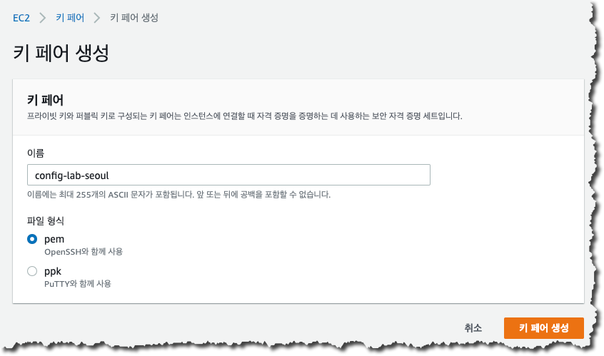
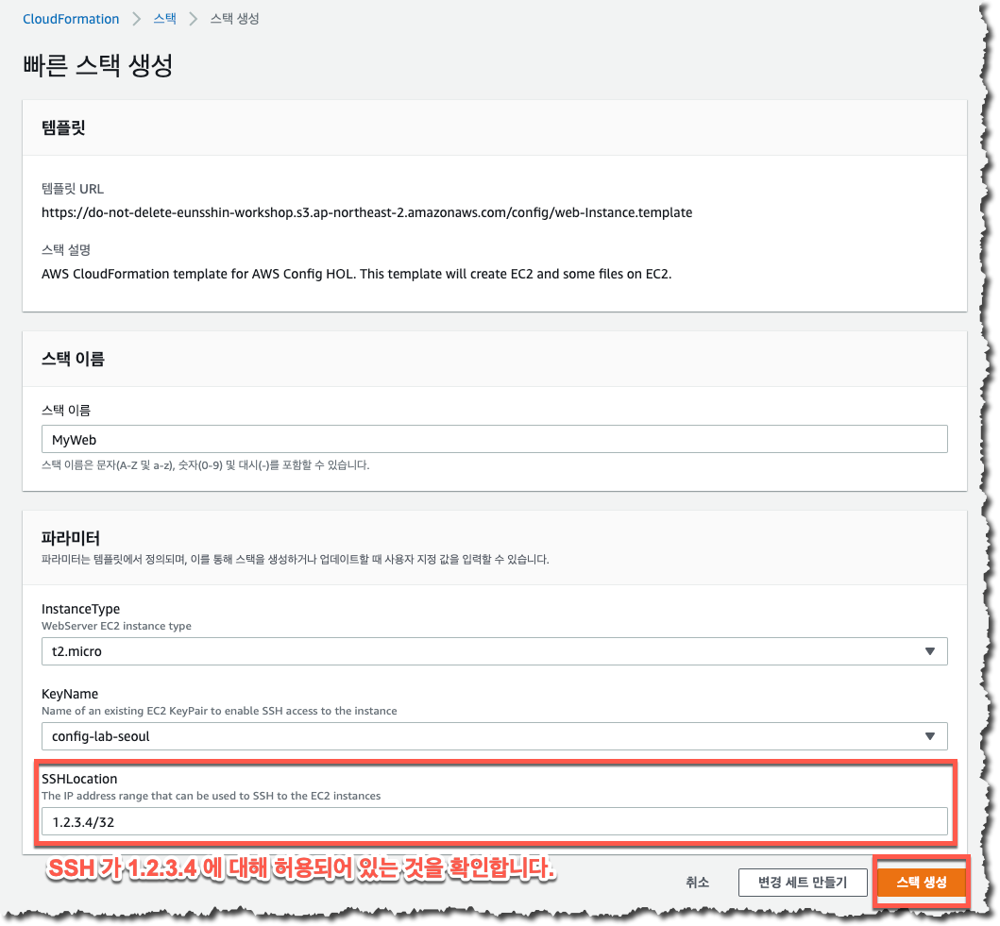
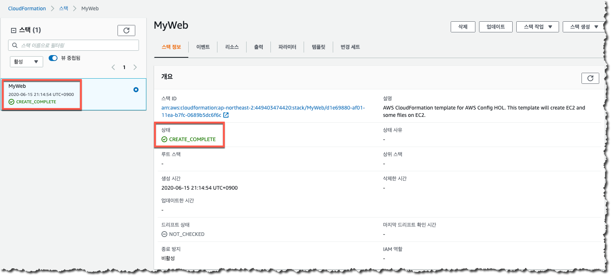

이번 모듈에서는 위협 요인이 내재된 환경을 구성하기 위해 CloudFormation을 실행합니다. CloudFormation을 통해 다음과 같은 AWS 리소스가 생성됩니다.
| AWS 서비스 유형 | 리소스명 | 기타 |
|---|---|---|
| EC2 인스턴스 | WebServerInstance | t2.micro |
| VPC | VPC | 10.10.0.0/16 |
| VPC Subnet | PublicSubnet | 10.10.0.0/18 |
| VPC Subnet | PrivateSubnet | 10.10.64.0/18 |
|기타 서비스| Elastic IP, Route table, Security Groups, Network ACL, IAM Role 등|
AWS 리전 확인
a. 이번 실습은 AWS 서울 (ap-northeast-2) 리전에서 수행됩니다.
b. AWS 관리 콘솔로 접속해서, 아래의 화면과 같이 AWS 서울 리전이 선택되었는지 확인합니다. Open AWS Console
본 실습의 모든 과정은 서울 리전에서 이루어집니다. 원활한 실습 진행을 위해서 반드시 서울 리전이 선택되었는지를 확인하시기 바랍니다.
EC2 키페어 생성 (이미 생성된 경우 이 단계 생략)
a. EC2 키페어는 EC2인스턴스 생성을 위해 필요한 항목이므로, CloudFormation 템플릿을 실행하기에 앞서 EC2 키페어를 생성합니다.
b. 이미 EC2 키페어가 생성된 경우라면, 이 단계를 생략합니다. EC2 키페어가 없다면 EC2 콘솔로 접속하여 키페어를 생성합니다.
c. EC2 콘솔 화면의 좌측 메뉴에서 “키 페어”를 클릭하고 “키 페어 생성” 버튼을 클릭합니다.
d. “키 페어 이름”에 “config-lab-seoul”를 입력한 후, “생성”을 클릭합니다.
e. 이후 “config-lab-seoul.pem” 파일을 임의의 폴더에 다운로드합니다.

CloudFormation 템플릿 실행
a. CloudFormation은 템플릿 파일 (json, yml)에 EC2 인스턴스, 네트워크 구성 등의 클라우드 인프라 리소스를 모델링하고 클라우드 환경에서 프로비저닝할 수 있는 서비스입니다.
b. CloudFormation 템플릿을 실행하기 위해 링크를 클릭합니다. 링크를 클릭하면 아래와 같은 화면이 표시됩니다.
 * 템플릿 생성에 사용된 스택 이름, 파라미터, KeyName, SSHLocation 등은 필요에 따라 수정이 가능합니다. 다만, 원활한 진행을 위하여 가급적 기본값을 사용하시기를 권고드립니다.
정상적으로 진행이 되는 경우 아래와 같이 스택의 상태가 “CREATE_COMPLETE)으로 되어 있는 것을 확인하실 수 있습니다. 
EC2 인스턴스 생성에 사용된 템플릿은 별도의 VPC 와 EIP 등을 추가로 생성하므로 기존에 사용하던 계정에 VPC 나 EIP 의 수가 한계에 도달한 경우 스택 생성이 실패하게 됩니다.